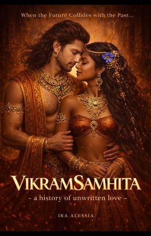
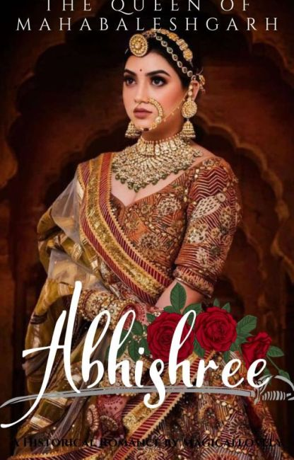
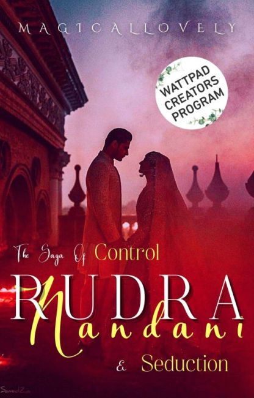
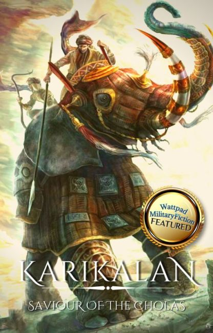

@Ira_alessia
Samhita Maity, a historian, found excitement in discovering long-lost secrets of histories- a perfectionist in her work. However, there was one mysterious figure eluding her expertise-the exploration of the most celebrated king of ancient India, whose name resounded across the world. His unwritten and unfinished books ignited her curiosity, and day and night, her thoughts were consumed by him. Who was he beyond the exterior of a king? How did his empire attain such......
Start ReadingMay require VPN in some regions

@Magicallovely
I never imagine in my dreams that i'll loose my only family my brother Emotions and blood have that sacred bond that the thickness of blood matters on the emotions running through the nerves.
Start ReadingMay require VPN in some regions

@Magicallovely
Rudra was my love and so was I for him until I came to know that everything was just a game. Emotions and blood have that sacred bond that the thickness of blood matters on the emotions
Start ReadingMay require VPN in some regions

@The_EpicWriter
"A pointless war is just that, my boy. Pointless." One fatal night changes everything for Thirumavalavan, Prince of Urayur. One moment, he is a happy-go-lucky Prince, without a care in the
Start ReadingMay require VPN in some regions